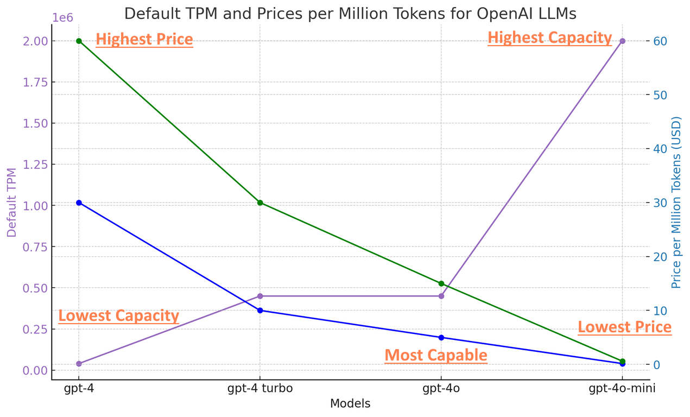
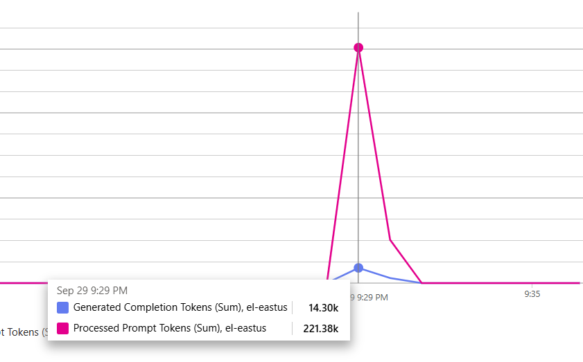
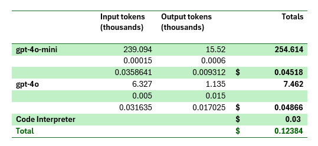

'Reasoning Tokens' and swarm-based agent applications
Today is an exciting time to be a product builder and AI applications consultant. Two of the biggest obstacles to building useful systems with generative AI have fallen away in the last month or two: available capacity of state of the art models, and high costs.
As of today (Sept 30, 2024) the default quotas are documented on the Azure OpenAI Service quotas and limits page.
Massive capacity increases of available Tokens Per Minute (TPM) per deployment
Azure OpenAI Service imposes quotas and rate limits to manage resources effectively. These limits are defined in terms of Tokens Per Minute (TPM) and Requests Per Minute (RPM).
- Default TPM Limits:
- GPT-4o: 450,000 TPM (Default), 30 million TPM (Enterprise agreement)
- GPT-4o-mini: 2 million TPM (Default), 50 million TPM (Enterprise agreement)
- GPT-4 Turbo: 450,000 TPM (Default), 2 million TPM (Enterprise agreement)
... and steep price declines

In terms of practical architecture and design, going from a quota of 80k per minute to 2000k changes things dramatically.
'Reasoning Tokens', swarms, and high TPM requirements
Recently OpenAI released o1-preview. The o1 models prioritize enhanced reasoning and extended thinking time for complex tasks.
OpenAI hasn't disclosed how the system works and are reportedly banning people who get too nosey. API billing for the model includes 'reasoning tokens'. Reasoning tokens are a key aspect of the o1 models, representing the model's internal thought process as it breaks down the prompt, considers various approaches, and formulates a response. These tokens are not visible in the API response but are still billed and counted as output tokens.
Thinking for yourself
While I don't know how OpenAI's chain of thought system works, I can guess that it is based on the same extension mechanism used for image generation, file search, code interpreter and plugins which, in the assistants API is called tools.
Tools allow a language model to know about and 'call' other programs. The language model has no ability to talk to other systems (+1 for humanity), the program (such as a chatbot) using the language model has to do the work of invoking the tool (somehow) with the input provided by the language model, get the results (however is appropriate) and continue the generation by including the tool call output in the next generation operation.
My work with AI ecosystems over the past couple of years has included a mix of python, javascript/typescript, and .NET. A big reason I used c# and .NET for AntRunner instead of one of the others is the strength of .NET for asynchronous operations and parallel tasks. That is to say simply: it's easy to do a lot of things at once, instead of one thing at a time.
Doing a lot of things at once is really important if you have a lot of work to do that can be done in parallel.
Over the coming days, weeks, and months I plan to write a lot about building agentic AI applications. I'll be using AntRunner which is an open source library and associated tools for building AI applications. AntRunner allows an ant to use tools which might be other ants. In those cases, a swarm of ants work together in parallel to create the answer.
This chart shows one such run which took just over 60 seconds. During that time a total of 41 ants search the web, loaded pages and extracted relevant content, but it also shows a massive spike in usage which the quota for the deployments easily permit.

The prompt
Use python to get today's date and then use it to find things to do in Atlanta for each of the next four weekends with pictures and correct links from FindAnswers.
Don't forget - include only valid links!
Sample output
You can view the output of a sample run here
Cost breakdown
Using mostly gpt-4o-mini keeps costs down. The single call to gpt-4o cost almost as much as 40 calls to gpt-4o-mini!

This same ant swarm with only gpt-4o produces similar, slightly better results but costs around $1.20 instead of 12 cents. I can easily reduce it to 9 cents by replacing code interpreter with a local function.
--Doug Ware September 30, 2024
P.S. Need to build AI applications but could use a guide? I'd love to hear from you!